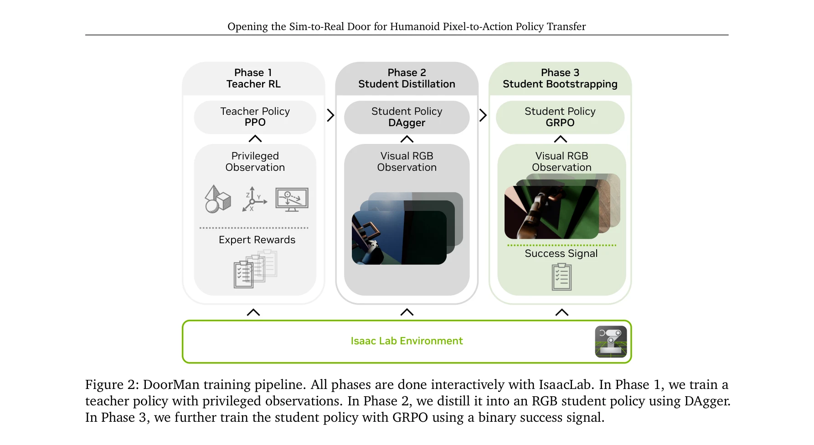
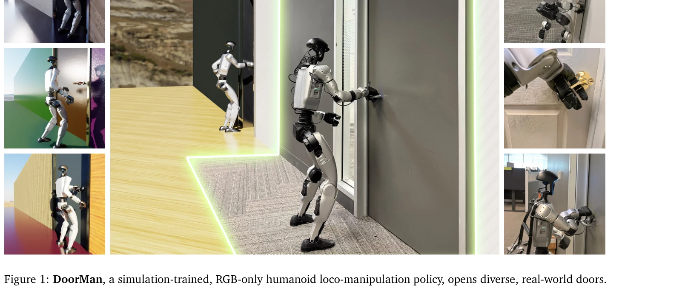
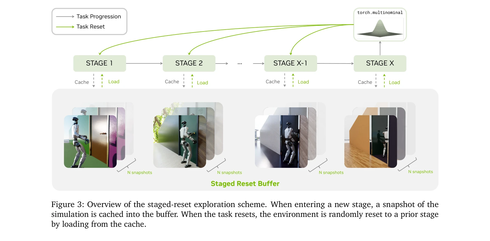

저자: Haoru Xue, Tairan He, Zi Wang, Qingwei Ben, Wenli Xiao, Zhengyi Luo, Xingye Da, Fernando Castañeda, Guanya Shi, Shankar Sastry, Linxi "Jim" Fan, Yuke Zhu | 날짜: 2025-11-30 | DOI: 10.48550/arXiv.2512.01061

Figure 2: DoorMan training pipeline. All phases are done interactively with IsaacLab. In Phase 1, we train a
GPU 가속 포토리얼리스틱 시뮬레이션과 teacher-student-bootstrap 학습 프레임워크를 통해 순수 RGB 시각만 사용하여 인간형 로봇이 다양한 문을 열 수 있는 sim-to-real 정책을 개발했다.

Figure 1: DoorMan, a simulation-trained, RGB-only humanoid loco-manipulation policy, opens diverse, real-world doors.

Figure 3: Overview of the staged-reset exploration scheme. When entering a new stage, a snapshot of the
총평: 순수 RGB 시각만을 사용하여 다양한 실제 문을 여는 인간형 로봇 정책을 시뮬레이션에서만 훈련하여 영점 샷 전이에 성공한 획기적인 연구로, staged-reset 탐색과 GRPO 기반 bootstrapping 등의 novel 방법론이 실질적 성능 개선을 입증한다.